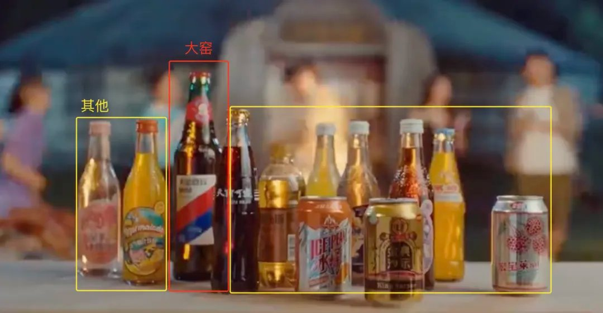
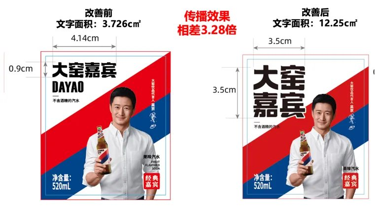
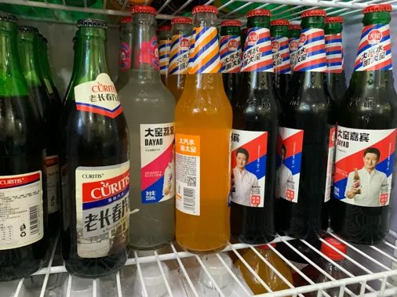
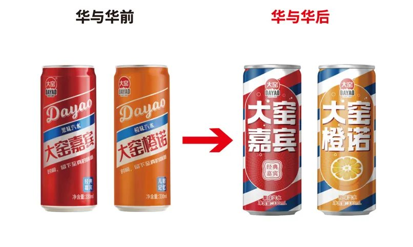
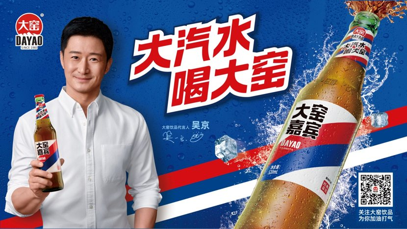

01 · 课题
渠道很强，但品牌还不够强
大窑以 520 毫升大玻璃瓶切入餐饮渠道，在产品、价格和渠道上已经建立优势。但在成熟市场，“大窑”容易被当成一类大瓶汽水；进入新市场时，陌生的品牌认知又增加了渠道拓展阻力。
项目不是推翻已有优势，而是把“渠道推动销售”升级为“消费者指名购买”。

02 · 定义
把“大”变成品牌独有的价值
消费者对大窑原有的认知分散在“大玻璃瓶”“老汽水”“大绿棒子”等词语中。项目从企业已有资产出发，将“大玻璃瓶汽水”凝结为“大汽水”新品类，让大窑获得清晰、可重复传播的解释。

品类定义之后，再用一句消费者能够脱口而出的话完成品牌命名和购买指令：
大汽水，喝大窑！
03 · 识别
把历史条纹变成超级花边
大窑包装长期使用红蓝条纹。项目没有另造一个陌生符号，而是保留并强化这一资产，加入白色间隔，形成可阵列、可重复的红蓝白超级花边。

04 · 包装
让产品在终端自己会说话
包装改造围绕真实销售现场展开：放大产品名，把超级花边和品牌谚语放上瓶颈与背标。即使产品躺在冰柜里、被放进回收篮，仍能被快速发现和识别。




05 · 放大
从包装、终端到全国传播
请代言人不是孤立动作。吴京与“大汽水，喝大窑！”共同进入产品包装、餐饮终端、电梯、高铁和机场，让品牌识别在消费者的购买路径中反复出现，并为渠道拓展提供品牌势能。
